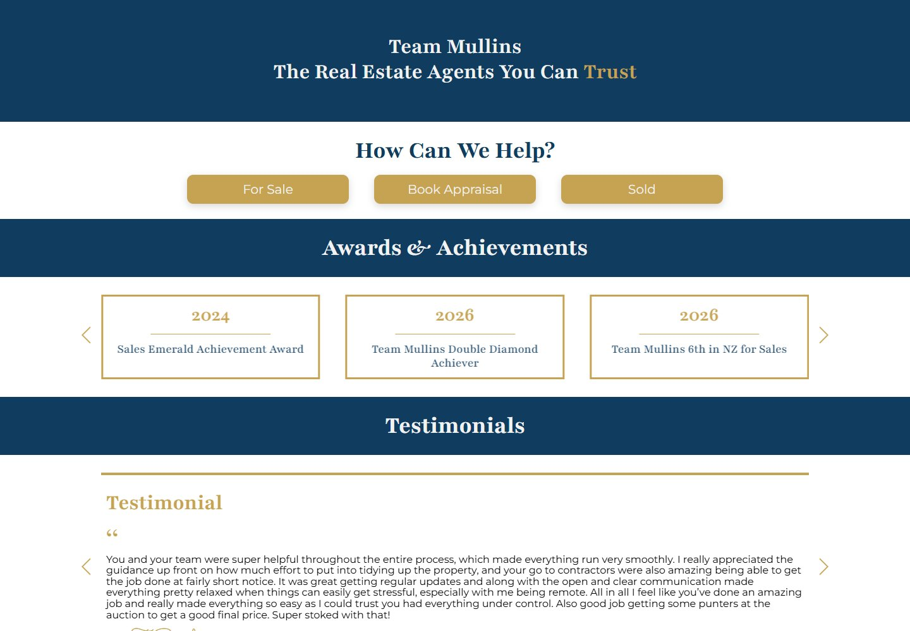

Case studies
Work, considered.
Websites we have designed and launched for real businesses. Each one began with listening, and ended with something its owners are proud to share.

LIVE SITEREAL ESTATE
Team Mullins
Website design and lead generation for a real estate team.
 LIVE SITE
LIVE SITE
PROJECT MANAGEMENT
Genesis Projects
A website redesign for a Christchurch project management consultancy.
Case study
Team Mullins
The brief
A real estate team needed a website that shows off its listings, builds trust with buyers and sellers, and turns visitors into enquiries.
What we made
A clear, high-converting website, designed from the first concept through to high-fidelity wireframes, with listings, results and a prominent way to book an appraisal.
How we worked
Closely with the client, so the design matched their brand and marketing goals, and alongside the developer, so it could be built exactly as designed.
Case study
Genesis Projects
The brief
An established project management consultancy wanted a clearer, more modern website that better reflects the work it does.
What we made
An end-to-end redesign, focused on the user experience, a stronger visual hierarchy and a structure that helps visitors get in touch.
How we worked
We led the design and worked with a senior software engineer to hand it over for build, so the finished website stayed true to the designs.
Could your business be next?
Tell us about your business and what you're hoping for. We'll reply within one working day.